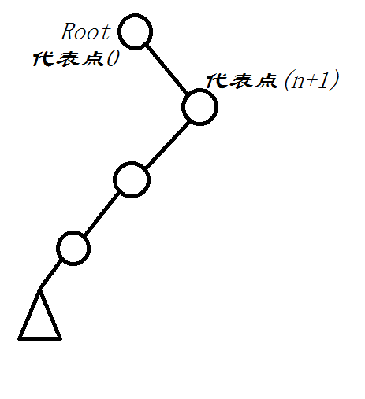

伸展树($Splay$) ，一个很玄学的数据结构，据说拉伸拉着拉着就平衡了，均摊复杂度为$O(log_2n)$ ，关键在于重构、自调节。注意到关键在于$Splay()$ 部分，包含了$Rotate()$ ，剩下的部分由题目而定.
Splay
对于三种情况，
$u$ 的父亲为根节点，这样进行一遍单旋即可，即把$u$转上去，$Rotate(u)$
$u$ 的父亲不是根节点，$u$ 、父亲和祖父三点共线，此时需要先把父亲转上去，再把 $u$ 转上去.
 我们考虑$F$ 为$u$的父节点，$R$为$F$的父节点，$a、b、c、d$ 代表各个子树。两种不同的旋转过后，对于节点$u,F,R$ 对总深度的影响并不大，关键在于子树$a、b、c、d$。
我们考虑$F$ 为$u$的父节点，$R$为$F$的父节点，$a、b、c、d$ 代表各个子树。两种不同的旋转过后，对于节点$u,F,R$ 对总深度的影响并不大，关键在于子树$a、b、c、d$。$a$ 在两种旋转后相同，$c$ 深度相同，$d$ 在第一种转法里面深度+1，在第二种转法里面深度+2，$b$ 在第一种转法里面深度不变，在第二种转法里深度-1，相比较下来第二种转法更好，更利于打散树，否则第一种转法可能会退化成一条链
$u$ 的父亲不是根节点，$u$ 、父亲、祖父三点不共线，此时只需要$u$ 向上转两次就好
|
|
Rotate
关键在于明确左儿子还是右儿子的问题，可以借助图来推导.

|
|
Del
先把节点$u$转到根上来，然后删除$u$之后只需要合并两子树即可，考虑$u$的儿子个数，没儿子直接删(更新$root$)，有一个儿子的话把儿子当做根，如果有两个儿子，在左子树里找到最大的数(<=val[u])，然后把这个节点转到左子树的根上，作为总根，再把$u$的右儿子接到总根上即可.
|
|
还有一些必要的函数:
$Newnode()$
1234567void Newnode(int &u,int f,ll x){u=++tot;fa[u]=f;mi[u]=sum[u]=val[u]=x;son[u][0]=son[u][1]=0;sz[u]=1;}
$Insert()$
12345678910111213bool Insert(int x){int p=rt;for(;;p=son[p][x>val[p]]){if(x==val[p]){splay(p);//Question Why?return false;}if(!son[p][x>val[p]])break;}Newnode(p,x);splay(tot);return true;}
$Pre()$
123456789101112131415int Pre(int p,int x){//<=xint ans=-1;while(1){Down(p);if(val[p]<=x){if(ans==-1||val[ans]<val[p])ans=p;if(son[p][1])p=son[p][1];else break;}else{if(son[p][0])p=son[p][0];else break;}}return ans;}
$Next()$
123456789101112131415int Suf(int p,int x){int ans=-1;while(1){Down(p);if(val[p]>=x){if(ans==-1||val[ans]>val[p])ans=p;if(son[p][0])p=son[p][0];else break;}else{if(son[p][1])p=son[p][1];else break;}}return ans;}$RotateTo()$
123456789101112131415void RotateTo(int k,int goal){//K小的节点拉到goal下面/*由于各种可能的情况(如初始节点0，n+1、或区间翻转等)无法直接用下标访问节点，换句话说，节点的内存块发生变动，这时唯一能做的事情就是sz，对其二分即可找到第K大的节点.*/int p=rt;Down(p);while(sz[son[p][0]]!=k){if(sz[son[p][0]]>k)p=son[p][0];else{k-=sz[son[p][0]]+1;p=son[p][1];}Down(p);}Splay(p,goal);}
附：基本原理
摘自Dong的博客
伸展树的出发点是这样的：考虑到局部性原理（刚被访问的内容下次可能仍会被访问，查找次数多的内容可能下一次会被访问），为了使整个查找时间更小，被查频率高的那些节点应当经常处于靠近树根的位置。这样，很容易得想到以下这个方案：每次查找节点之后对树进行重构，把被查找的节点搬移到树根，这种自调整形式的二叉查找树就是伸展树。每次对伸展树进行操作后，它均会通过旋转的方法把被访问节点旋转到树根的位置。
用Splay解决问题的时候一定要注意删除节点时对sz的影响
Splay处理问题时注意用的是权值平衡树还是下标平衡树，若是权值注意是否可能为负数
有一些题目如poj3648，维护序列,可能会访问到0，n+1，这时我们可以在开始的时候就见两个节点进去
例如这样，根据大小关系，我们可以确保初始的两个点分别表示0，n+1，同时利于我们对其利用sz二分查找到点(RotateTo)
模板很重要，一定要照着模板，有些地方如$Rotate()和Splay()$最后的Up部分
在把p $Splay$ 到根时注意p本身也要先down一遍,一旦有操作涉及到p的儿子(e.g.Rotate()),一定要先Down()一遍
$By SongToy$